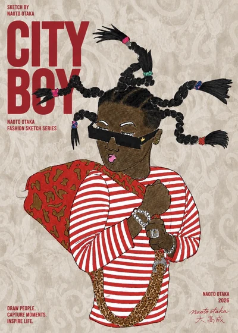
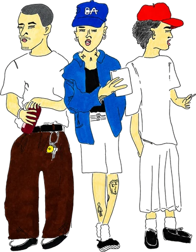
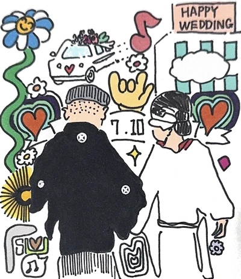
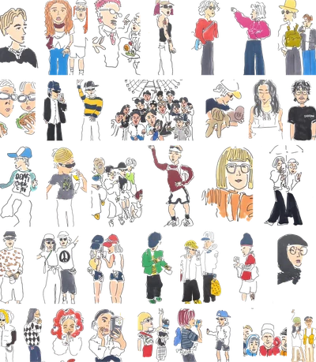
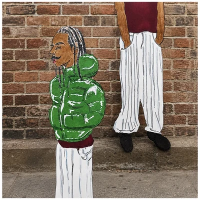
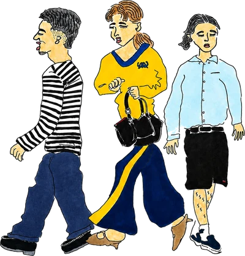
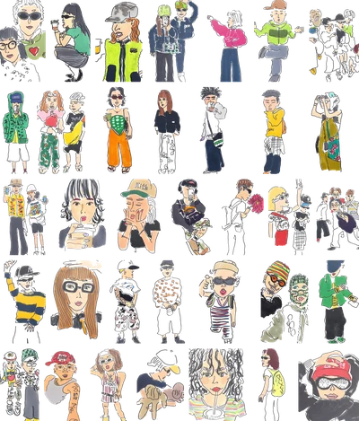

COLLABORATION
MAISON DE VII.
× NAOTO OTAKA
LIVE DRAWING
AT MAISON DE VII.
WEAR. WALK. DRAW. WHERE VINTAGE MEETS ART.
2026.09.26 — TOKYO, DAIKANYAMA
東京・代官山のヴィンテージセレクトショップ「MAISON DE VII.」とのコラボレーション。店頭でのライブドローイングを行いました。
テーマは WEAR. WALK. DRAW. ── 着る、歩く、描く。ヴィンテージとアートが交わる場所で、その日その場所の空気を線に残しています。
PEOPLE / FASHION / CITY






